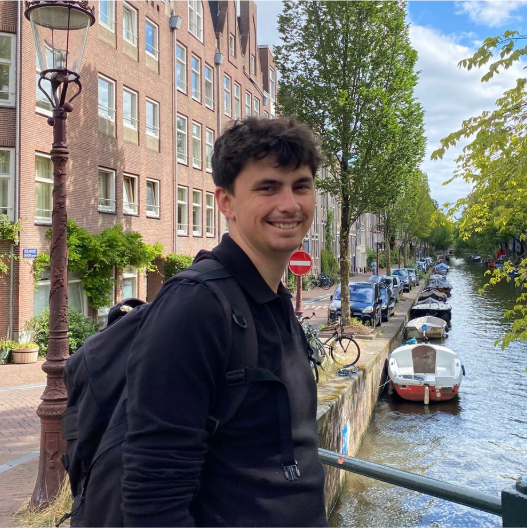

Bienvenue dans mon
Portfolio ! Je suis
Alexys Nauleau.
Étudiant en Master SIGAT (Système d'Information Géographique et Analyse des Territoires) à l'Université de Rennes 2.

Étudiant en Master SIGAT (Système d'Information Géographique et Analyse des Territoires) à l'Université de Rennes 2.
Actuellement étudiant en Master Géomatique, je me suis spécialisé dans la conception d'interfaces cartographiques interactives. J'aimerais mettre à profit cette double compétence pour développer des outils d'aide à la décision à la fois techniques et intuitifs.
Au cours de mon parcours, j'ai développé une expertise croisée entre l'analyse de données (QGIS, R Studio, BDD) et les langages web (HTML, CSS, JS), me permettant de transformer des informations complexes en visualisations fluides et accessibles.
Analyse spatiale et gestion de bases de données géographiques.
 PostgreSQL
PostgreSQL
Développement front-end et création graphique assistée.
Développement et analyse de données avec différents langages.
 SQL
SQL
Accompagnement méthodologique et disciplinaire des étudiants de première année. Aide à la réussite et soutien pédagogique personnalisé.

Conseil technique auprès des clients sur l'entretien et les équipements de piscine. Gestion des stocks, diagnostic de pannes et vente de solutions adaptées.
Accueil et orientation des publics VIP lors des rencontres à domicile. Gestion des flux et garantie d'une expérience qualitative dans les espaces hospitalités.

Encadrement de groupes d'enfants sur les temps méridiens et du soir. Conception et mise en œuvre d'activités pédagogiques et ludiques en assurant la sécurité.
Formation aux fondamentaux de l'analyse territoriale, de la cartographie et des SIG. Spécialisation progressive en géomatique et aménagement.

Obtention du Baccalauréat général. Spécialités Sciences de la Vie et de la Terre (SVT), Physique-Chimie et option Mathématiques Complémentaires.
N'hésitez pas à me contacter pour discuter de projets ou d'opportunités professionnelles.